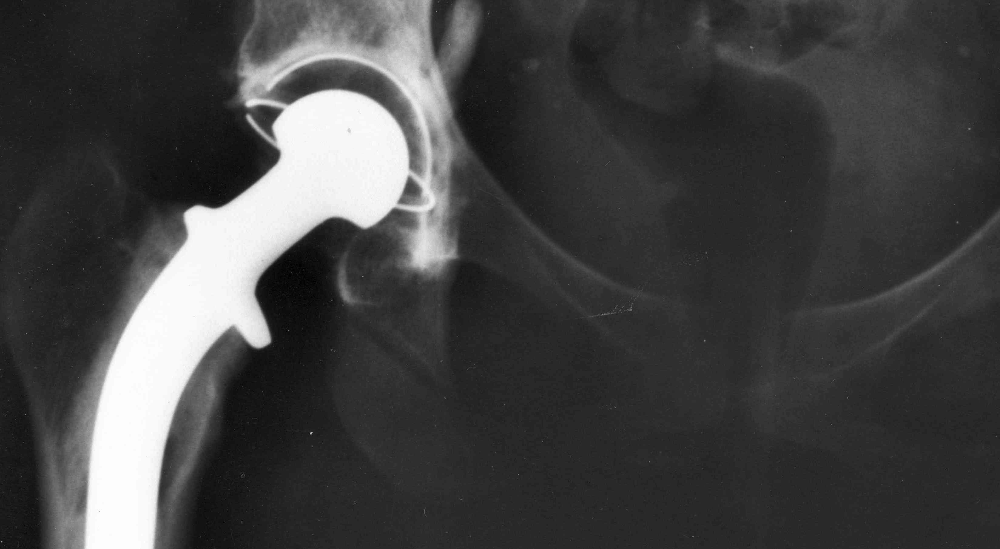

<ion-view view-title="Recovering">
<ion-content class="padding"  in-view-container>

<div on-swipe-left="turnpage('forward')">
<div class="card">
  <div class="item item-divider">
      Recovering from joint surgery
  </div>

  <div class="item-body">
    <div ng-show="checkConnection()" class="video-container"  in-view="playStopVideoOnScroll($event)" >
      <iframe width="640" height="360" src="https://www.youtube.com/embed/gM4P-MA2hTo?rel=0" frameborder="0" allowfullscreen></iframe>
    </div>


    

    


  <marked>
    Joint replacement changes lives, but it is not a 'quick fix'. Most patients experience some pain and discomfort. 

    There are lots of things you can do to speed your recovery. 
  </marked>

  </div>
</div>


<div class="card">
  <div class="item item-divider">
      What you need to know
  </div>

  <div class="item-body">
  
  <marked>
    
    > Scientists' understanding of pain has changed in the last 20 years. Pain is more complicated than we first thought: Our feelings and emotions play a big role in how much pain we feel. 

    The link between our emotions and pain is not just 'in our heads' or imaginary: it has a big impact on our bodies too. 

    When the brain feels threatened - for example after a trauma or major surgery –
    it sends messages to the spinal cord and to nerves throughout our body. These messages tell the body to magnify our sensations, and can sometimes make even gentle sensations painful.

    This is what everyone having surgery needs to know:  
    
    1. Our brains play a big role in determing how much pain we feel. We can't always control this process, but when we're upset or anxious we do feel more pain, and this understanding can help us.

    2. Surgery can make our brain more sensitive to input from our body. Even normal sensations can become painful because our brain has adapted to be more sensitive. 

    3. This means that pain after joint surgery is normal, and not a sign that anything is wrong.
   
    Thankfully, we can reduce pain by using relaxation and positive suggestions.

  </marked>


  </div>
</div>


<a class="button button-full button-assertive icon-right ion-chevron-right" href="#/tab/relaxation">
  Using relaxation to increase comfort
</a>

</div>

</ion-content>
</ion-view>